Wotywne źródło
Nić przypływu
Siatka pamięci
Ogniwo ossuarium
Zagnieżdżone koło zamachowe
Sztandar zwycięzcy
Nieprzerwany dzień
Wysoki stan wody
Przypis kustosza
Pierwszeństwo grobu
Nadrzędny regulator
Polowy rozkaz
Torba pielgrzyma
Rozsypane płatki
Szkatuła palimpsestu
Zapieczętowany testament
Szuflada części
Szabla oczyszczenia
Kadzielnica oczyszczenia
Oczyszczający deszcz
Pióro wymazania
Nagrobny rozpuszczalnik
Gniazdo resetu
Nit uderzeniowy
Dzwonek miłosierdzia
Łańcuch deszczu
Liczydło echa
Dzwon żałoby
Wychwyt strażniczy
Ostatni sztandar
Relikwiarz brzasku
